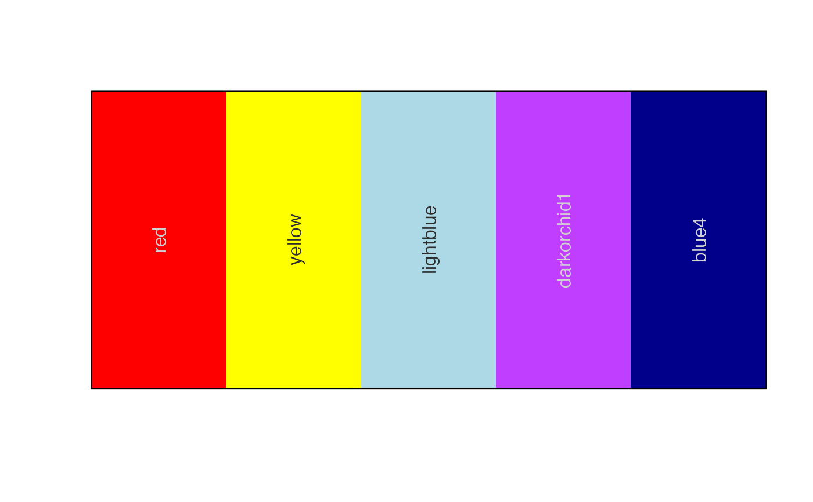
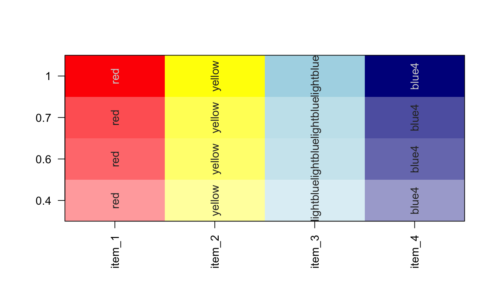
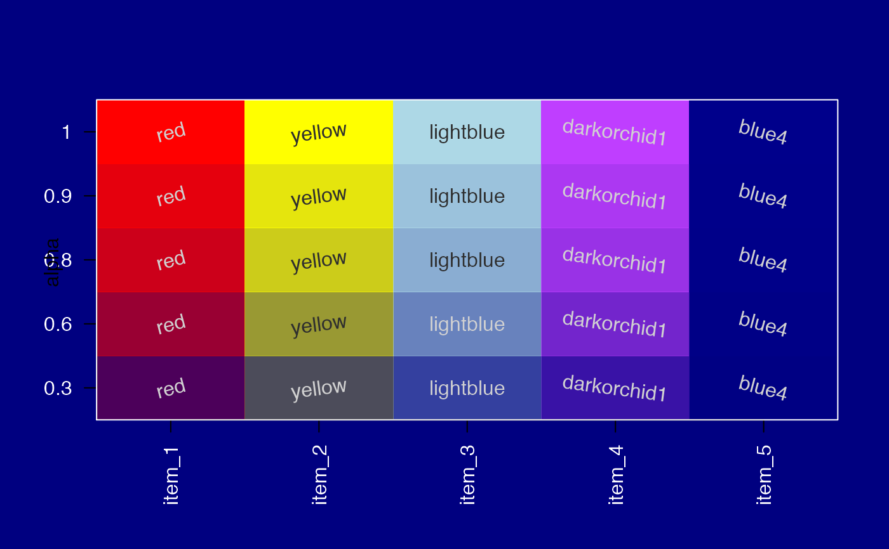

Given a vector or colors, define a contrasting color for text, typically using either white or black.
setTextContrastColor( color, hclCutoff = 60, rgbCutoff = 127, colorModel = c("hcl", "rgb"), useGrey = 0, keepAlpha = FALSE, bg = NULL, ... )
| color | character vector with one or more R-compatible colors. |
|---|---|
| hclCutoff | numeric threshold above which a color is judged to be
bright, therefore requiring a dark text color. This comparison uses the
L value from the |
| rgbCutoff | numeric threshold above which a color is judged to be bright, therefore requiring a dark text color. The mean r,g,b value is used. |
| colorModel | Either 'hcl' or 'rgb' to indicate how the colors will be judged for overall brightness. The 'hcl' method uses the L value, which more reliably represents overall visible lightness. |
| useGrey | numeric threshold used to define dark and bright text colors, using the R greyscale gradient from 0 to 100. useGrey=10 implies 'grey10' and 'grey90' for the contrasting text colors. useGrey=15 is useful if labels may also overlap white or black space, since the text will never be fully white or black. |
| keepAlpha | logical indicates whether the input color alpha transparency should be maintained in the text color. By default, text alpha is not maintained, and instead is set to alpha=1, fully opaque. |
| bg | vector of R colors, used as a background when determining the
brightness of a semi-transparent color. The corresponding brightness
value from the |
| ... | additional arguments are ignored. |
Other jam color functions:
alpha2col(),
applyCLrange(),
col2alpha(),
col2hcl(),
col2hsv(),
color2gradient(),
fixYellowHue(),
fixYellow(),
getColorRamp(),
hcl2col(),
hsv2col(),
isColor(),
kable_coloring(),
makeColorDarker(),
make_styles(),
rgb2col(),
setCLranges(),
showColors(),
unalpha(),
warpRamp()
#> [1] "#FFFFFFFF" "#000000FF" "#000000FF" "#FFFFFFFF"# demonstrate the effect of alpha transparency colorL <- lapply(nameVector(c(1,0.7, 0.6, 0.4)), function(i){ nameVector(alpha2col(color, alpha=i), color); }) jamba::showColors(colorL, groupCellnotes=FALSE)# change background to dark blue bg <- par("bg"); par("bg"="navy"); jamba::showColors(colorL, groupCellnotes=FALSE)